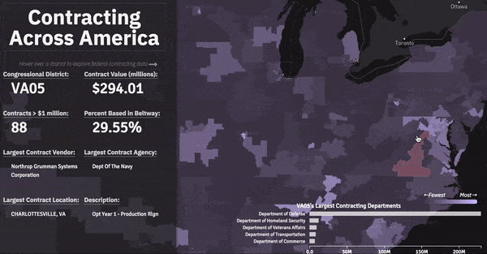
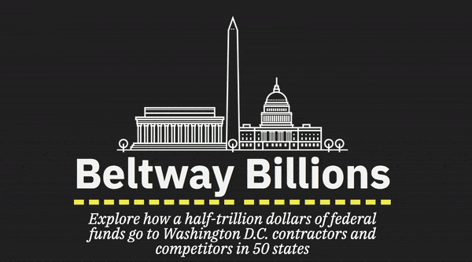
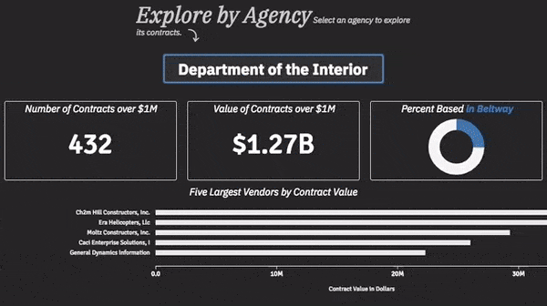
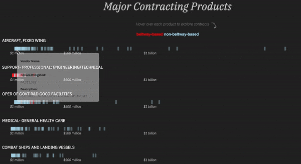

Beltway Billions Data Visualization
The government spends billions of dollars per year on a dizzying array of gear and specialized services: office furniture, cloud computing, breakfast cereal, and advanced weapons systems are among destinations of taxpayer funds. I created a project to explore how a half-trillion dollars of federal funds go to Washington D.C. contractors and competitors in 50 states.

This analysis, based on data published on Enigma Public, explores the geography of this contract spending among beltway firms and the thousands of regional and small-town competitors.
After a significant amount of data cleaning (some entity resolution) and generation of summary statistics, the data were almost ready for a few key visualizations.

I utilized the wonderful ggmap package to geocode locations in R and developed a method for tagging contracts as “beltway” by a simple spatial join with the Washington-Arlington-Alexandria, DC-VA-MD-WV Metropolitan Statistical Area in QGIS.

This was my first real use of Mapbox GL I combined it with a handful of basic D3 charts and built a UI that encouraged exploration at a local level. I aggregated by congressional district as a way to normalize by a logical method, as each district has about 710,000 residents.

The analysis uses USA Spending data published on Enigma Public. It includes 2016 (the last year full data is available) federal government contracts greater than $1 million that were awarded to US-based companies and executed in the United States.